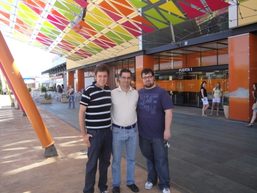

El otro día quedamos a comer Antonio Cerezo, Andrés Ãlvarez y yo, todos antiguos miembros del Centro de Innovación Experimental del Conocimiento (CEIEC). Aunque somos amigos y seguimos en contacto, no habíamos vuelto a estar juntos desde Enero, cuando entré de profesor en la Carlos III.
Lo pasamos muy bien recordando viejos tiempos y riéndonos de algunos momentos que nos tocaron vivir en el CEIEC 😉